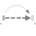
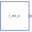
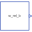
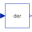
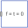

FreeMotionScalarInitFree motion joint with scalar initialization and state selection (6 degrees-of-freedom, 12 potential states) |

|
Diagram
{kind=link}
Information
This information is part of the Modelica Standard Library maintained by the Modelica Association.
Joint which does not constrain the motion between frame_a and frame_b. Such a joint is meaningful if the relative distance and orientation between frame_a and frame_b, and their derivatives, shall be used as states or shall be used for non-standard initialization. This joint allows to initialize every scalar element of the relative quantities, as well as to define StateSelect attributes for every scalar element separately.
In the following figure the animation of a FreeMotionScalarInit joint is shown. The light blue coordinate system is frame_a and the dark blue coordinate system is frame_b of the joint. (here: r_rel_a_1(start = 0.5), r_rel_a_2(start = 0), r_rel_a_3(start = 0.5), angle_1(start = 45o), angle_2(start = 45o), angle_3(start = 45o)).

A example to use this joint for the initialization of a planar double pendulum by providing its tip position, is shown in Examples.Elementary.DoublePendulumInitTip.
Parameters (26)
| animation |
Value: true Type: Boolean Description: = true, if animation shall be enabled (show arrow from frame_a to frame_b) |
|---|---|
| use_r |
Value: false Type: Boolean Description: = true, if r_rel_a shall be used |
| r_rel_a_1_stateSelect |
Value: StateSelect.never Type: StateSelect Description: StateSelect of r_rel_a[1] |
| r_rel_a_2_stateSelect |
Value: StateSelect.never Type: StateSelect Description: StateSelect of r_rel_a[2] |
| r_rel_a_3_stateSelect |
Value: StateSelect.never Type: StateSelect Description: StateSelect of r_rel_a[3] |
| use_v |
Value: false Type: Boolean Description: = true, if v_rel_a shall be used |
| v_rel_a_1_stateSelect |
Value: StateSelect.never Type: StateSelect Description: StateSelect of v_rel_a[1] |
| v_rel_a_2_stateSelect |
Value: StateSelect.never Type: StateSelect Description: StateSelect of v_rel_a[2] |
| v_rel_a_3_stateSelect |
Value: StateSelect.never Type: StateSelect Description: StateSelect of v_rel_a[3] |
| use_a |
Value: false Type: Boolean Description: = true, if a_rel_a shall be used |
| use_angle |
Value: false Type: Boolean Description: = true, if angle shall be used |
| sequence_start |
Value: {1, 2, 3} Type: RotationSequence Description: Sequence of angle rotations |
| angle_1_stateSelect |
Value: StateSelect.never Type: StateSelect Description: StateSelect of angle_1 |
| angle_2_stateSelect |
Value: StateSelect.never Type: StateSelect Description: StateSelect of angle_2 |
| angle_3_stateSelect |
Value: StateSelect.never Type: StateSelect Description: StateSelect of angle_3 |
| use_angle_d |
Value: false Type: Boolean Description: = true, if angle_d shall be used |
| angle_d_1_stateSelect |
Value: StateSelect.never Type: StateSelect Description: StateSelect of angle_d_1 |
| angle_d_2_stateSelect |
Value: StateSelect.never Type: StateSelect Description: StateSelect of angle_d_2 |
| angle_d_3_stateSelect |
Value: StateSelect.never Type: StateSelect Description: StateSelect of angle_d_3 |
| use_angle_dd |
Value: false Type: Boolean Description: = true, if angle_dd shall be used |
| use_w |
Value: false Type: Boolean Description: = true, if w_rel_b shall be used |
| w_rel_b_1_stateSelect |
Value: StateSelect.never Type: StateSelect Description: StateSelect of w_rel_b[1] |
| w_rel_b_2_stateSelect |
Value: StateSelect.never Type: StateSelect Description: StateSelect of w_rel_b[2] |
| w_rel_b_3_stateSelect |
Value: StateSelect.never Type: StateSelect Description: StateSelect of w_rel_b[3] |
| use_z |
Value: false Type: Boolean Description: = true, if z_rel_b shall be used |
| arrowDiameter |
Value: world.defaultArrowDiameter Type: Length (m) Description: Diameter of arrow from frame_a to frame_b |
Inputs (2)
| arrowColor |
Default Value: Modelica.Mechanics.MultiBody.Types.Defaults.SensorColor Type: Color Description: Color of arrow |
|---|---|
| specularCoefficient |
Default Value: world.defaultSpecularCoefficient Type: SpecularCoefficient Description: Reflection of ambient light (= 0: light is completely absorbed) |
Connectors (26)
| frame_a |
Type: Frame_a Description: Coordinate system a fixed to the component with one cut-force and cut-torque |
|
|---|---|---|
| frame_b |
Type: Frame_b Description: Coordinate system b fixed to the component with one cut-force and cut-torque |
|
| r_rel_a_1 |
Type: RealOutput Description: Relative distance r_rel_a[1] |
|
| r_rel_a_2 |
Type: RealOutput Description: Relative distance r_rel_a[2] |
|
| r_rel_a_3 |
Type: RealOutput Description: Relative distance r_rel_a[3] |
|
| v_rel_a_1 |
Type: RealOutput Description: Relative velocity v_rel_a[1] |
|
| v_rel_a_2 |
Type: RealOutput Description: Relative velocity v_rel_a[2] |
|
| v_rel_a_3 |
Type: RealOutput Description: Relative velocity v_rel_a[3] |
|
| a_rel_a_1 |
Type: RealOutput Description: Relative acceleration a_rel_a[1] |
|
| a_rel_a_2 |
Type: RealOutput Description: Relative acceleration a_rel_a[2] |
|
| a_rel_a_3 |
Type: RealOutput Description: Relative acceleration a_rel_a[3] |
|
| angle_1 |
Type: RealOutput Description: First rotation angle or dummy |
|
| angle_2 |
Type: RealOutput Description: Second rotation angle or dummy |
|
| angle_3 |
Type: RealOutput Description: Third rotation angle or dummy |
|
| angle_d_1 |
Type: RealOutput Description: = der(angle_1) |
|
| angle_d_2 |
Type: RealOutput Description: = der(angle_2) |
|
| angle_d_3 |
Type: RealOutput Description: = der(angle_3) |
|
| angle_dd_1 |
Type: RealOutput Description: = der(angle_d_1) |
|
| angle_dd_2 |
Type: RealOutput Description: = der(angle_d_2) |
|
| angle_dd_3 |
Type: RealOutput Description: = der(angle_d_3) |
|
| w_rel_b_1 |
Type: RealOutput Description: Relative angular velocity w_rel_b[1] |
|
| w_rel_b_2 |
Type: RealOutput Description: Relative angular velocity w_rel_b[2] |
|
| w_rel_b_3 |
Type: RealOutput Description: Relative angular velocity w_rel_b[3] |
|
| z_rel_b_1 |
Type: RealOutput Description: Relative angular acceleration z_rel_b[1] |
|
| z_rel_b_2 |
Type: RealOutput Description: Relative angular acceleration z_rel_b[2] |
|
| z_rel_b_3 |
Type: RealOutput Description: Relative angular acceleration z_rel_b[3] |
Components (12)
| world |
Type: World |
|
|---|---|---|
|  | initPosition |
Type: InitPosition |
| initAngle |
Type: InitAngle |
|
|  | initAngularVelocity |
Type: InitAngularVelocity |
|  | derv |
Type: Der[3] |
| dera |
Type: Der[3] |
|
| derd |
Type: Der[3] |
|
| derdd |
Type: Der[3] |
|
| derz |
Type: Der[3] |
|
|  | zeroForceAndTorque1 |
Type: ZeroForceAndTorque |
| zeroForceAndTorque2 |
Type: ZeroForceAndTorque |
|
| arrow |
Type: SignalArrow |
Used in Examples (5)
|
Modelica.Mechanics.MultiBody.Examples.Elementary
Demonstrate how to initialize a double pendulum so that its tip starts at a predefined position |
|
|
Modelica.Mechanics.MultiBody.Examples.Constraints
Body attached by one spring and two prismatic joints or constrained to environment |
|
|
Modelica.Mechanics.MultiBody.Examples.Constraints
Body attached by one spring and revolute joint or constrained to environment |
|
|
Modelica.Mechanics.MultiBody.Examples.Constraints
Body attached by one spring and spherical joint or constrained to environment |
|
|
Modelica.Mechanics.MultiBody.Examples.Constraints
Body attached by one spring and universal joint or constrained to environment |